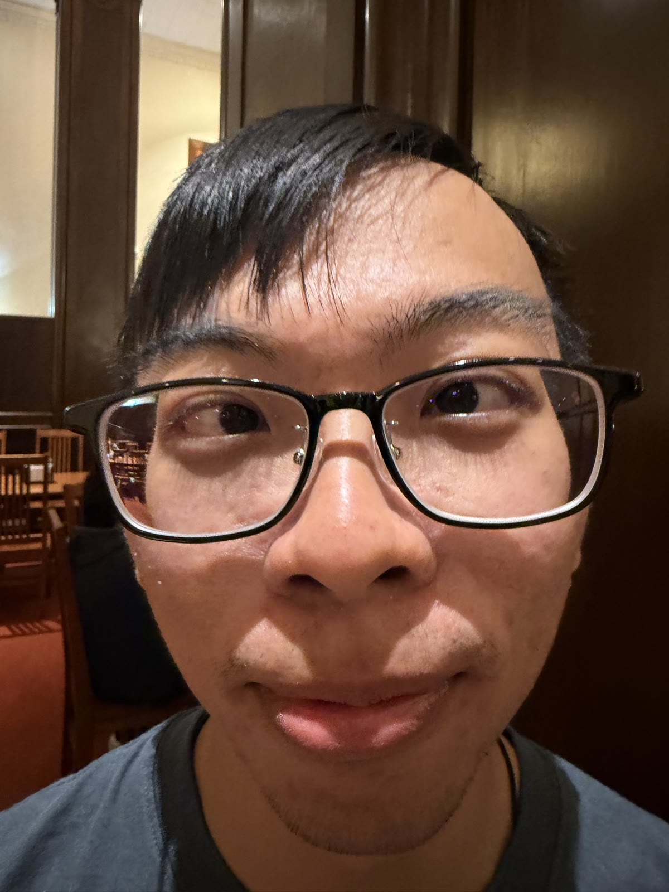
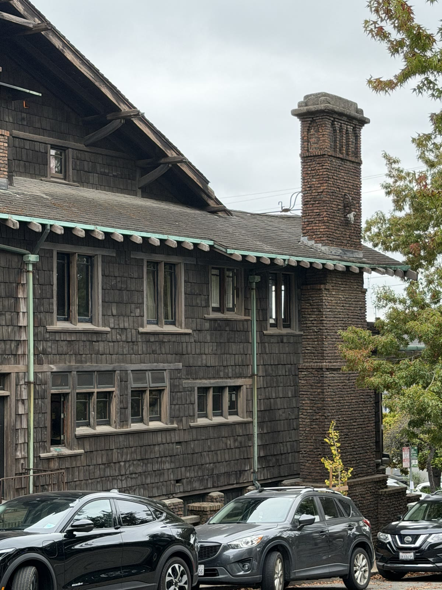
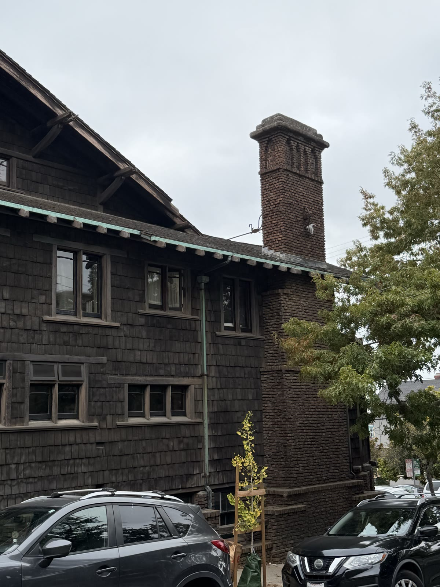
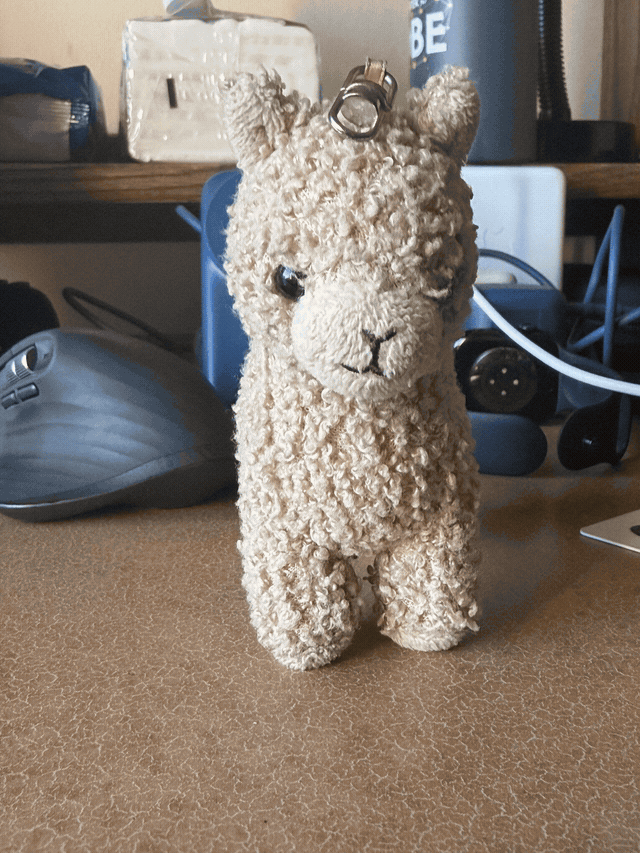

CS180, Fall 2026

The concept is simple, things closer to the camera look bigger, in the close up, my friend's nose is about 25cm away from the lens whereas his ears are about 35cm away from the lens, his nose about 40% closer, which leads to it being 40% bigger than it should be, which is why the nose bulges and the ears shrink. In the second photo, I backed up about 2 meters, and took the same photo, now everything looks proportional, in this case, neither the zoom or the lens fixed the issue, it was me stepping back that made the difference.


Same idea as part 1, just with a building instead of a face. In the first photo I was standing about 30 meters back and zoomed in, so the chimney was around 30 meters away and the far end of the wall was around 35 meters, only about 15% farther, which means the two ends render at almost the same size and the building flattens out, you can see the roofline running nearly straight across the frame. In the second photo I walked up to about 8 meters and took it without zoom, now the chimney is about 8 meters away and the far end of the wall is about 13 meters, over 50% farther, so the chimney comes out much bigger than everything around it and the windows shrink as they go back, and the roofline rakes down instead of staying level. The first one looks compressed because from that far away the near and far parts of the building are basically the same distance from me, not because the zoom did anything to the perspective.

In the dolly shot, two things are happening at once, we move back while keeping the subject the same size as we walk backwards, when we do this, the background is much farther way, this results in the background "swelling" up behind the subject as we walk backwards.